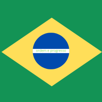
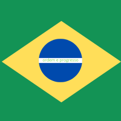

aguarde para novas curiosidades

O campo instala painéis solares turbinas eólicas ou biodigestores, o que ajuda a ter energia renovável e diminui os impactos ambientais, e as cidades próximas se beneficiam, pois se abastecem com essa energia, assim ajuda na conta de luz ou comércios urbanos, já o campo consegue vender para cooperativas ou consumidores urbanos, o que gera uma renda extra para a zona rural.

 
